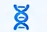
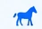

Our Story
Built by people who know the job search from the inside.
ROOK was created from real-world experience in medical diagnostics, healthcare sales, and animal health sales. After seeing firsthand how difficult it can be to find legitimate, relevant opportunities in these industries, we set out to build a better solution.
We're not a traditional job board trying to serve every industry. We're focused on the industries we know — and the professionals who keep them moving forward.
The Problem
Job searching became
a numbers game.
- Duplicate and outdated listings
- Irrelevant recommendations
- Unclear application status
- Enormous applicant pools
- Generic platforms not built for specialized industries
Too much noise. Not enough real opportunities for qualified professionals.
The ROOK Difference
We go closer to the source.
Instead of relying solely on the same job-board feeds everyone else uses, ROOK identifies opportunities directly from company career sites across medical device, diagnostics, pharmaceutical, biotechnology, healthcare technology, veterinary, animal health, and related industries.
We also invite recruiters and employers to post opportunities directly to ROOK — helping create a more focused collection of real, current opportunities.
▤Company
Career Sites
→ROOK
→♟♟The Right
Candidates
Smarter Matching
Finding jobs is only the beginning.
ROOK uses your background, sales experience, industry knowledge, product experience, territory experience, and other qualifications to identify opportunities that make sense for you — not just a larger list of jobs to sort through.
The Old Question“What jobs are
out there?”
→The ROOK Question“What jobs are
right for me?”
That distinction is at the heart of everything we're building.
Built From Experience

“I built ROOK because I wanted the career-search tool I couldn't find when I needed it myself. Experienced professionals shouldn't have to spend hours sorting through irrelevant or outdated listings just to find the opportunities that actually fit their background.”
Gene Zentko
Founder, ROOK
Specialized careers deserve specialized tools
Built for the industries we know.
Medical Device
Diagnostics & Laboratory
Pharmaceutical

BiotechnologyVeterinary

Animal HealthHealthcare Technology
Related Commercial Roles